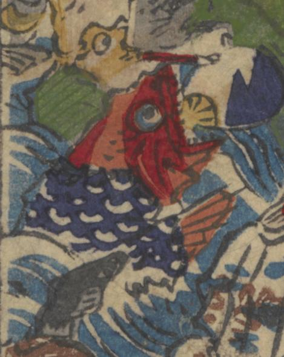

← 图鉴索引

魚が着物を着て、水中に浮かびながら大蛸の演奏を聴いている。
著作者：河鍋暁齊／出典：親書誌：U426_nichibunken_0367：狂斎百𠷰；キョウサイ ヒャクズ／日付：2014／資源識別子：U426_nichibunken_0367_0033_0009
Copyright (c)2010- International Research Center for Japanese Studies, Kyoto, Japan. All rights reserved.